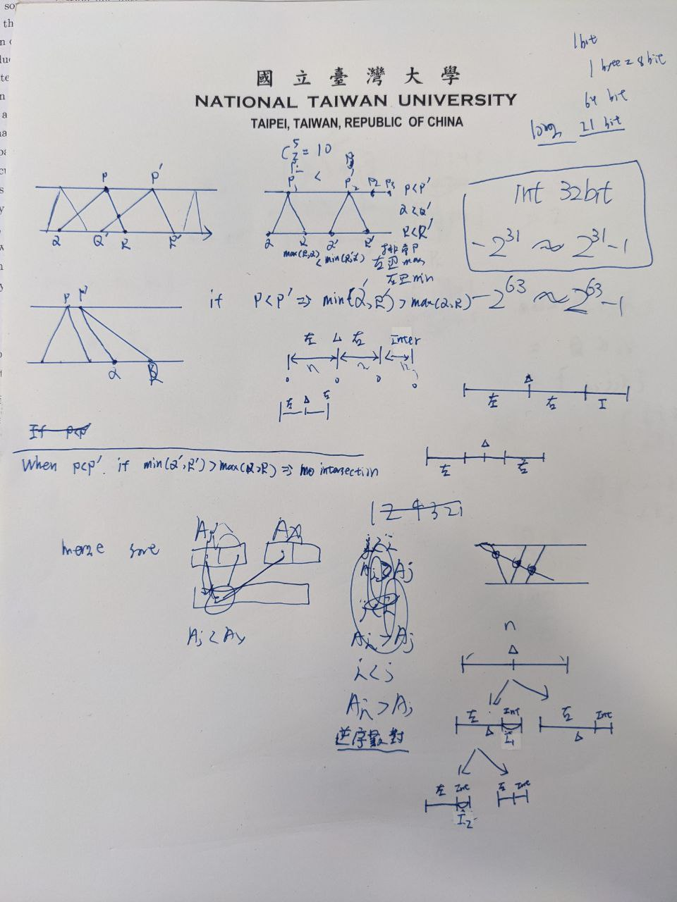

Strategy
int counting(left, right)
if (left+1 == right)
return 0
mid = (left + right) / 2
cnt = counting(left, mid)
cnt += counting(mid,left)
r = mid
for l = left to mid
while (r<right && A[l]>A[r])
r++
cnt += r-mid
return cnt
- Convert
Q, and R to max and min
- Sort
P along with max, min
- Sort
max and min at the same time with sorted P
How to know two triangles have intersection(s)?
Let points on two distinct triangles be (P,Q,R) and ‘(P’,Q',R')`.
- No intersection happens when
P > ‘P’andmin(Q',R') > max(Q,R)`
- Intersection happens: Otherwise
Range of <tt>Int</tt>
Int: 4 bytes
- 32 bit (1 byte = 8 bit)
- Range: -2^31 ~ 2^31-1
- Belongs to the range
Ref: https://www.tutorialspoint.com/cprogramming/c_data_types.htm
Hints
排序
- 排序
P
- 左邊
max
- 右邊
min
逆序述對
Ref:
Merge sort
#include <stdio.h>
#include <stdlib.h>
void merge(int arr[], int head, int mid, int tail){
int lenA = mid - head + 1;
int lenB = tail - (mid + 1) + 1;
int A[lenA];
int B[lenB];
int i, j, k;
for(i = 0; i < lenA; i++){
A[i] = arr[head + i];
}
for(j = 0; j < lenB; j++){
B[j] = arr[mid + 1 + j];
}
i = 0;
j = 0;
k = head;
while(i < lenA && j < lenB){
if(A[i] < B[j]){
arr[k] = A[i];
i++;
}
else{
arr[k] = B[j];
j++;
}
k++;
}
while(i < lenA){
arr[k] = A[i];
i++;
k++;
}
while(j < lenB){
arr[k] = B[j];
j++;
k++;
}
}
void merge_sort(int arr[], int head, int tail){
if(head < tail){
int mid = (head + tail) / 2;
merge_sort(arr, head, mid);
merge_sort(arr, mid+1, tail);
merge(arr, head, mid, tail);
}
}
int main(){
int count, i;
scanf("%d", &count);
int list[count];
printf("Numbers to be sorted: ");
for(i = 0; i<count; i++){
scanf("%d", &list[i]);
printf("%d ", list[i]);
}
printf("\n");
merge_sort(list, 0, count-1);
printf("Numbers Sorted: ");
for(i = 0; i<count; i++){
printf("%d ", list[i]);
}
return 0;
}
Ref:
Merge sort in CLRS
Merge Sort
MERGE_SORT(A,p,r)
if p<r
q = round( (p+r)/2 )
MERGE-SORT(A,p,q)
MERGE-SORT(A,q+1, r)
MERGE(A,p,q,r)
Merge
MERGE(A,p,q,r)
n1 = q - p + 1
n2 = r - q
let L[1..n1+1] and R[1..n2+1] be new arrays
for i = 1 to n1
L[i] = A[p+i-1]
for j = 1 to n2
R[j] = A[q+j]
L[n1+1] = inf
R[n2+1] = inf
i = 1
j = 1
for k = p to r
if L[i] <= R[j]
A[k] = L[i]
i = i+1
else
A[k] = R[j]
j = j + 1
Draft
